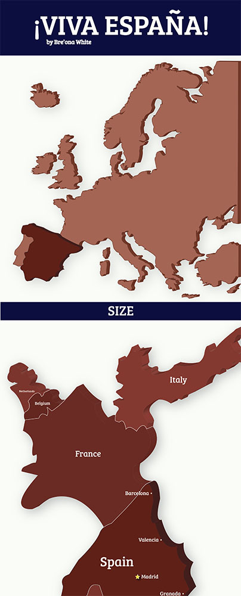
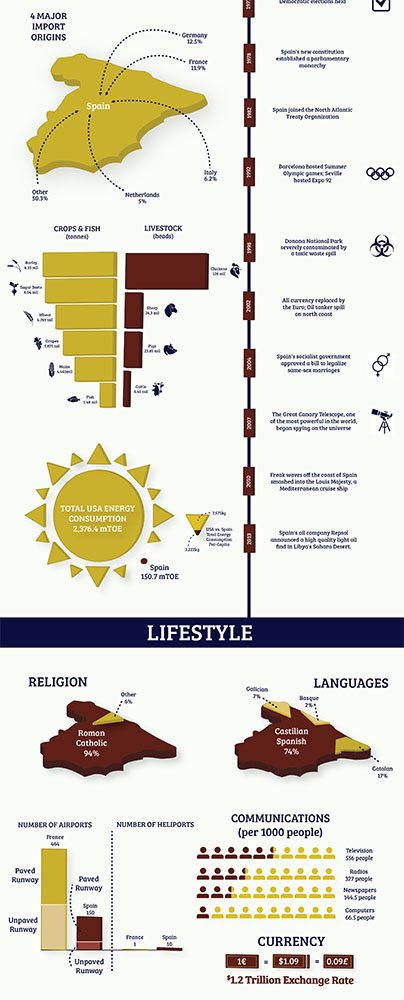
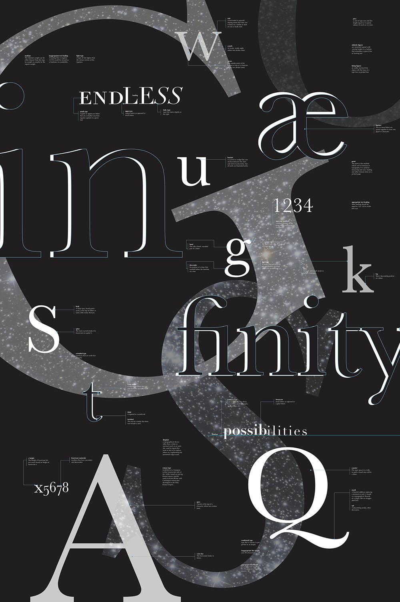
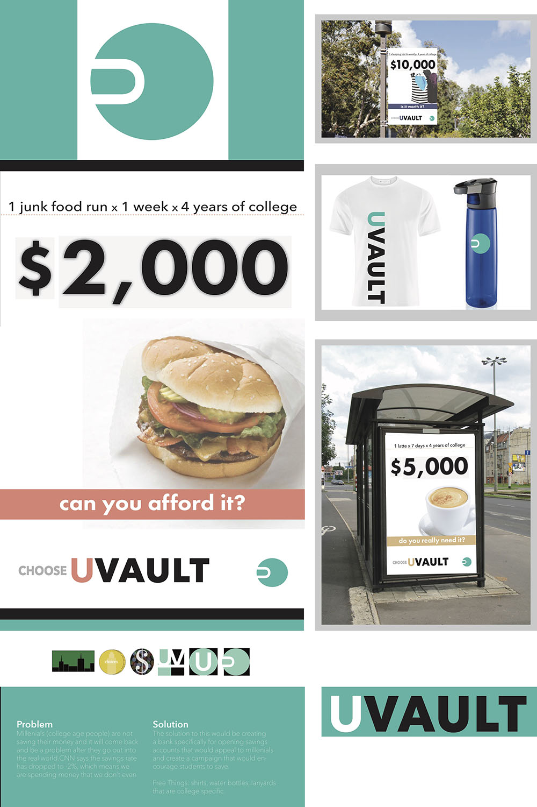
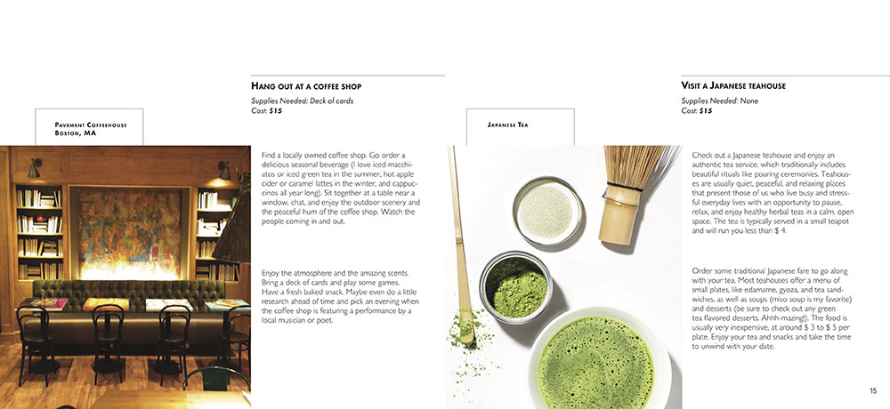

This book was made as a part of my Degree Project 1 class on why I want to be a designer. It is a book that talks about my childhood inspiration, my journey as a designer so far, and the things that have inspired me since I started designing. I created a 6x6 book called "Why The Hell Not: A Collection of Jumbled Thoughts". When I was all finished with the design, I created hard covers and coptic stitched the book together.
Mediums Used: Adobe InDesign
 These are two pieces of a large infographic that I made showcasing country data for Spain. I was given 27 pieces of information that I had to showcase in any way that I saw most effective. I decided to make a 9x72inch graphic illustrating all of these points. I made use of an isometric style to add dimension and stuck to primary colors because they are simple as well as go along with Spain's flag. This was quite a large and complex project.
View The Full Infographic Here
Mediums Used: Adobe Illustrator & Adobe Photoshop
This poster was made as one of the two projects in my Typography 2 class. The goal was to create a poster that shows typographic elements arranged in an eye-catching way. I wanted to use a black background so that things could really stand out. I also enjoyed playing with opacities and adding a pop of color.
Medium Used: Adobe InDesign
For Graphic Design 2, we worked on creating and developing a campaign of our choosing. I chose to develop a campaign called uVault, which would help college students to save their money. I had to come up with a logo, tagline, posters, and applications for this campaign.
This project was the second of two projects in my Typography 2 class. The goal of this was to take a book that already existed and re-design it. The book I chose was "52 Date Ideas under $20" by Meredith Lane. We had to design the layouts of the book, find pictures, choose the typefaces we used, and incorporate captions. I think this book came out to be playful and clean, which is why it is successful.
Mediums Used: Adobe InDesign
TOP OF PAGE